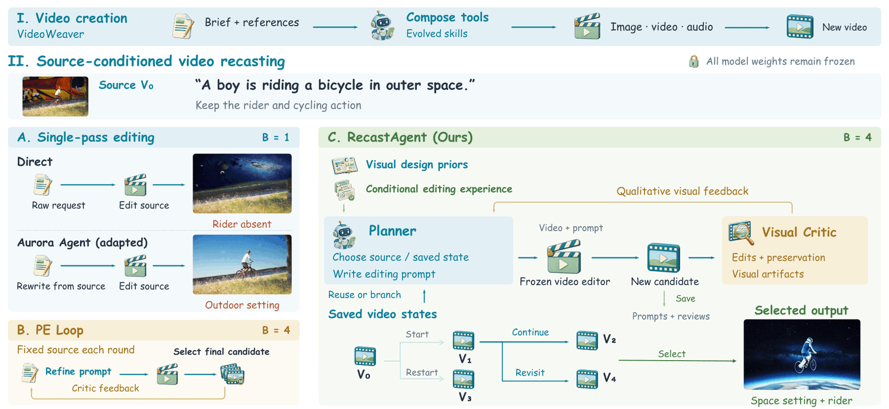
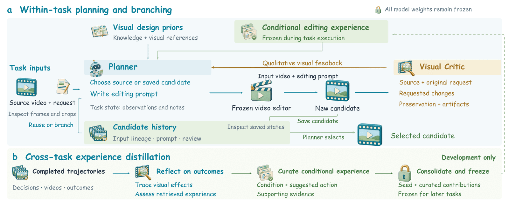
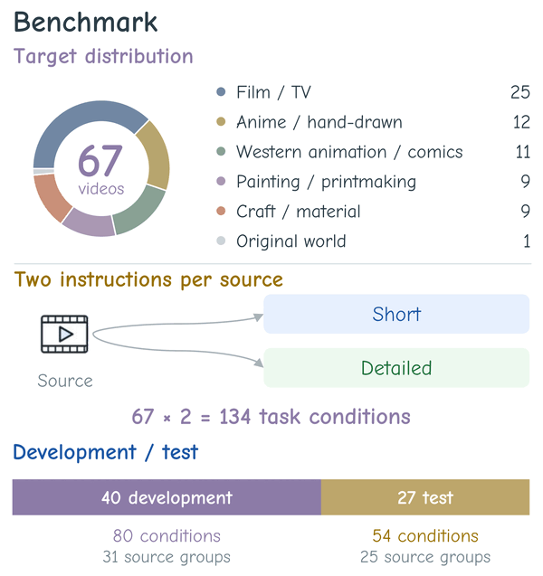
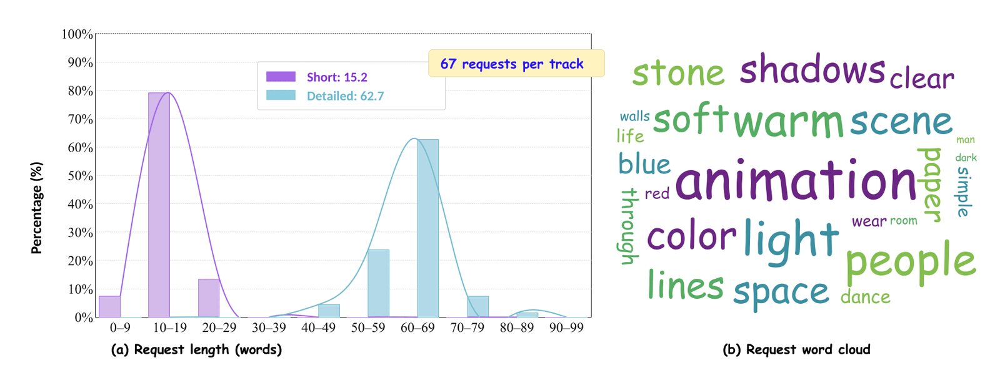
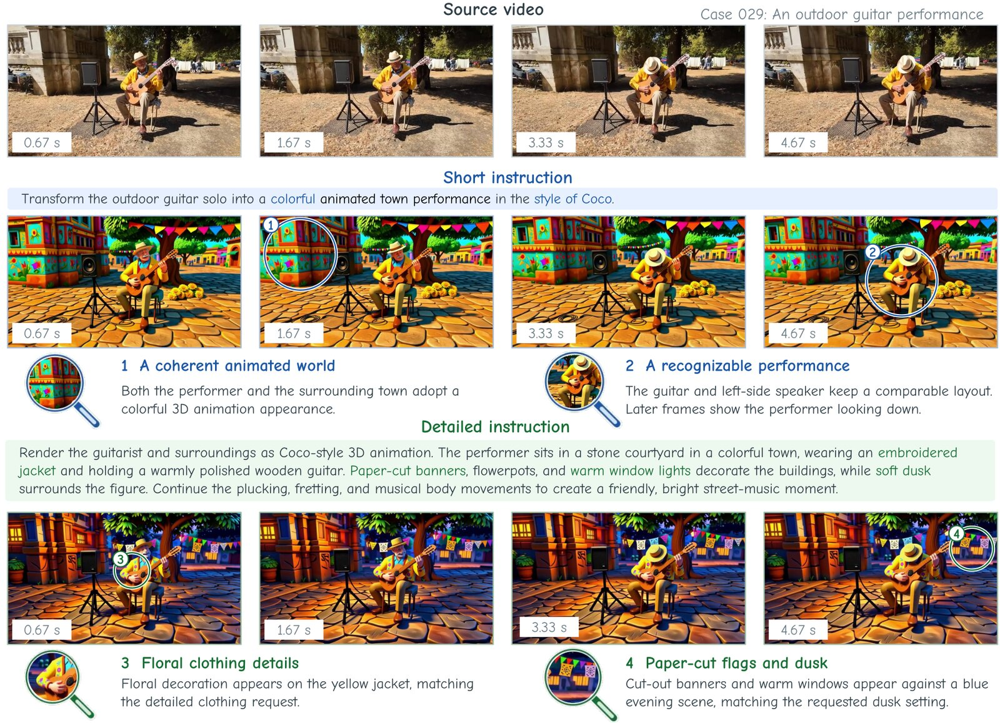
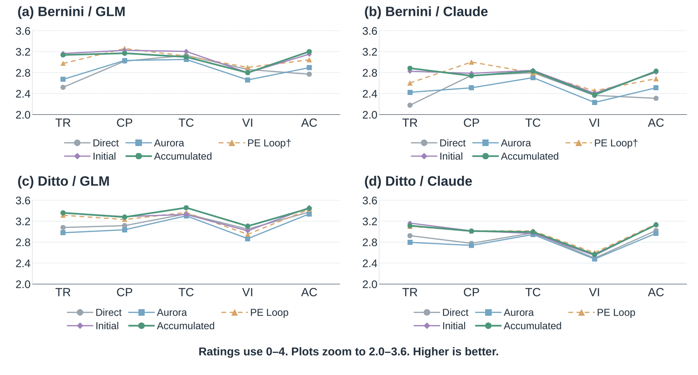

RecastAgent
What to Change, What to Keep:Experience-Evolving Agents for Video Recasting
Overview
Change the world an event happens in, not the event itself.
Video recasting moves the people and places of existing footage into a new visual world, such as a hand-drawn cartoon, a film universe or a craft material, while keeping the actions, interactions and spatial relations that make the moment recognizable. RecastAgent does this with frozen editors, and gets better at it by learning from its own editing trajectories.
Experience-Guided Planner
Chooses both the prompt and the input video state at every step. It can continue from a promising candidate or go back to the source to recover what an edit lost.
Visual Critic
Inspects native frames and crops of every result against the original request and returns qualitative feedback, not a score.
Experience Accumulation
After each development task, distills the trajectory into conditional, evidence-linked advice. The library is frozen before held-out tests.

Gallery
Same moment, new world.
Each case shows the source clip, the baselines (Aurora Agent for both editors; Direct and PE Loop for Ditto), and the video RecastAgent delivered with the same frozen editor. Pick a category or scroll the strip.
Method
Plan, edit, critique, choose. Then remember.
Within a task, the Planner grounds the request in the source, edits with a frozen video editor and listens to the Critic. Across tasks, finished trajectories become reusable, conditional advice.

Input choice, not just prompt choice
Continuing from a candidate keeps the target effects it already achieved. Returning to the source or an earlier candidate recovers a face, prop or interaction that a later edit lost. A wrong attribute binding points to the prompt; a lost object points to the input. In over half of completed runs, the Planner delivers an earlier candidate rather than the last one.
Advice with its conditions attached
Each experience entry states a recommendation, the editor, stage and instruction type where it applies, the trajectories that support it, and open questions. Every development task reads the same initial library, so contributions do not depend on task order across parallel workers.
Planner tools
| observe | Overview, consecutive native frames, or crops of one or more videos |
| browse · search · read | Navigate design references and experience entries |
| view_reference | View a reference image |
| video · history | Exact prompt and provenance of a video; earlier reviews |
| note | Keep working notes |
| generate | Edit a chosen input video with a prompt |
| finish | Deliver a chosen candidate |
Benchmark
Two instructions per source: one open, one exact.
A short request leaves design open; a detailed one specifies setting, attire, materials, lighting or interactions. Every output is judged against its own request.



What the judges check
Instruction diagnostics separate explicit-request completion, required source correspondence and unrequested damage. Detailed requests add binding and joint satisfaction; short ones add style realization, scene-specific design and creativity.
How they judge
GLM-5.3-Flash and Claude-Sonnet-5.5 independently rate anonymized outputs on five axes from 0 to 4 (TR, CP, TC, VI, AC), using frame plans derived from the source. Blind pairwise comparisons run in both orders, and only order-consistent outcomes count.
Results
Stronger recasts with the same frozen editors.
Bernini and Ditto, frozen. Online planning, PE prompt enhancement, critique and reflection all use GPT-6-Luna. Multi-round methods get four generations.
Blind pairwise task completion
Five-axis quality (0–4)
TR target realization · CP content correspondence · TC temporal consistency · VI visual integrity · AC aesthetic coordination. Initial / Accumulated = Planner with E0 / E1. † Bernini PE Loop uses a mixed evaluation cohort.

Zero-shot transfer with Bernini
| Method | FiVE PSNR ↑ | FiVE CLIP-T ↑ | FiVE-Acc ↑ | VE QA ↑ | VE Win % ↑ |
|---|---|---|---|---|---|
| Direct | 24.61 | 26.95 | 22.1 | 0.067 | – |
| Aurora Agent | 25.80 | 27.27 | 18.6 | 0.037 | 42.9 |
| RecastAgent (accumulated) | 25.51 | 27.68 | 26.4 | 0.199 | 57.1 |
Stratified 36-case subsets of FiVE-Bench and VE-Bench. The accumulated library is reused without any benchmark-specific update.
Where it helps, and where it does not
Against Aurora Agent the Planner wins about 80–90% of resolved comparisons on both editors. On Ditto, PE Loop wins slightly more pairwise comparisons than the Planner, although their five-axis scores are close. On held-out conditions GLM prefers the accumulated library (60–67%), while Claude rates the two near parity.
Limitations
Each condition uses a single trajectory, and the experience library is a single frozen batch (E0 → E1) rather than continual evolution. Order-swapped VLM judging reduces position bias, but human perceptual calibration remains future work.
Citation
BibTeX
@misc{recastagent,
title = {What to Change, What to Keep: Experience-Evolving Agents for Video Recasting},
author = {Anonymous},
year = {2026}
}